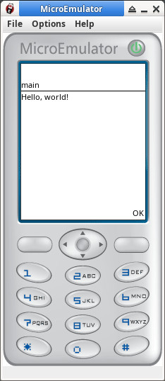

Hello.java
import javax.microedition.midlet.*;
import javax.microedition.lcdui.*;
public class Hello extends MIDlet {
public void startApp() {
Alert a = new Alert("main", "Hello, world!", null, AlertType.INFO);
Display.getDisplay(this).setCurrent(a);
}
public void pauseApp() {
}
public void destroyApp(boolean unconditional) {
}
}
manifest.mf
MIDlet-1: Hello, , Hello MIDlet-Name: Hello MIDlet-Version: 1.0 MIDlet-Vendor: You MicroEdition-Profile: MIDP-2.0 MicroEdition-Configuration: CLDC-1.1
編譯、執行
$ javac -classpath midpapi20-2.0.4.jar Hello.java $ jar cfm Hello.jar manifest.mf Hello.class $ java -cp microemulator-swing-2.0.4.jar:microemulator-2.0.4.jar:midpapi20-2.0.4.jar org.microemu.app.Main Hello.jar
